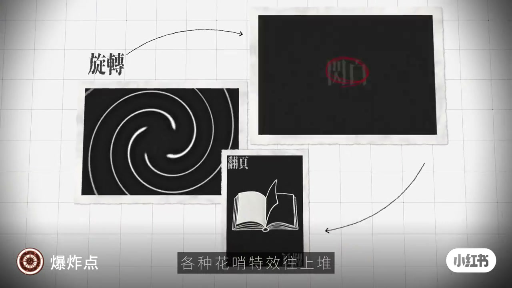
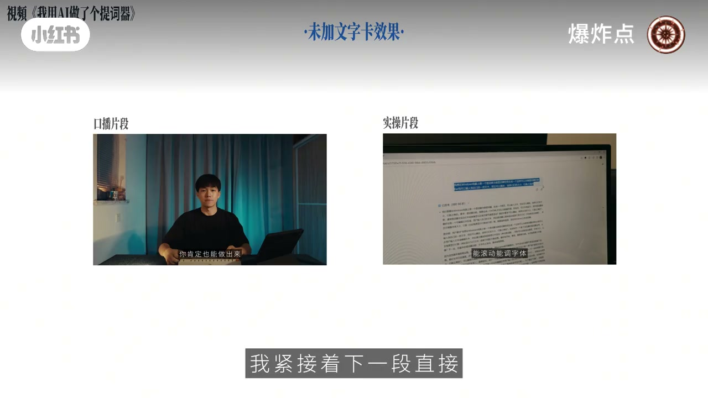
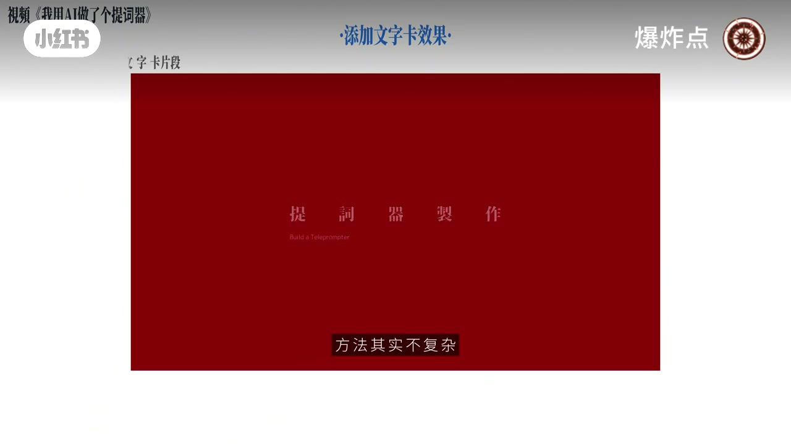
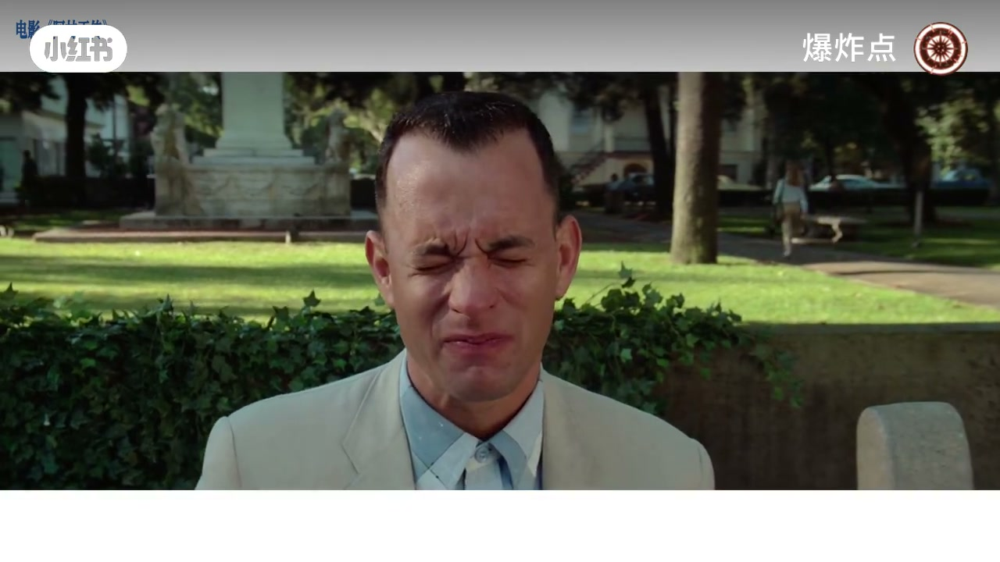
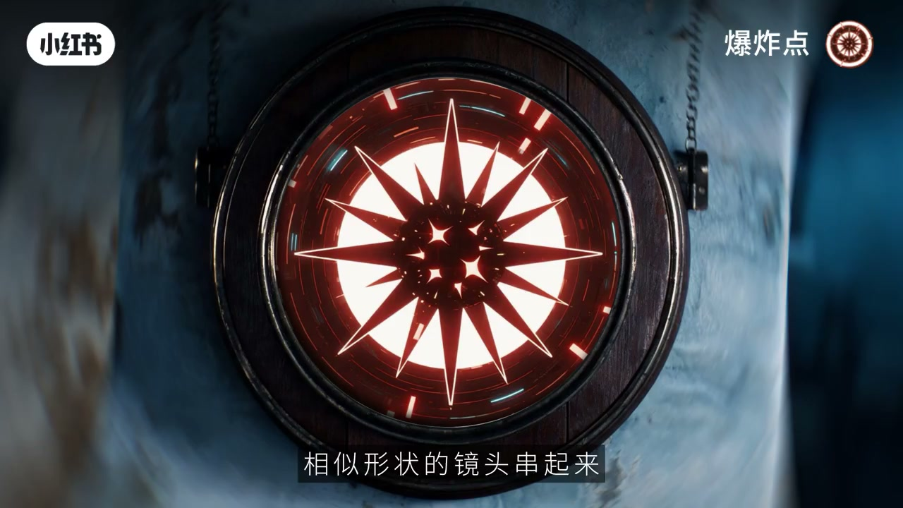
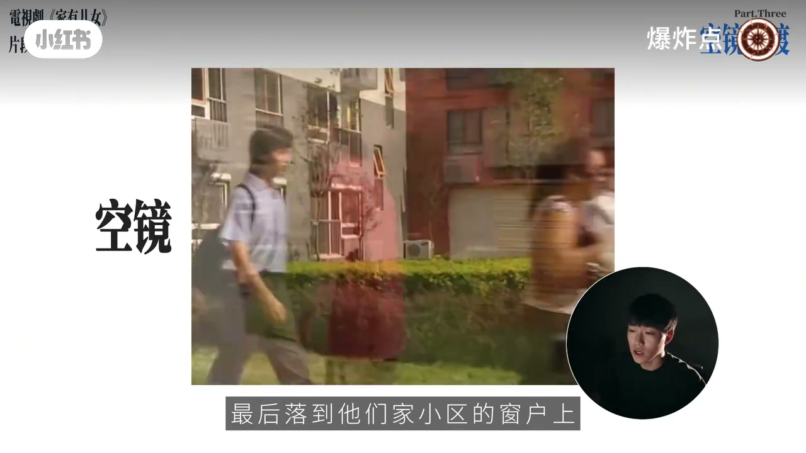
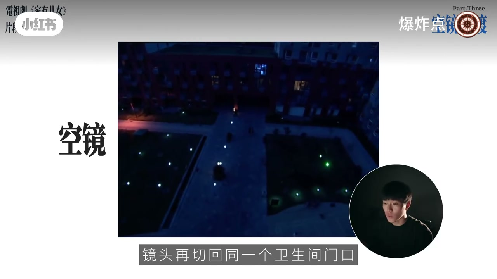

内容要点
「爆炸点」反驳「转场越多片子越两价」式花活：用自己口播片对比「硬切实录」与「加文字卡」；再拆《阿甘正传》脸部相似形、空镜切空间与跳时间。逻辑是节奏缓冲、时空调转与形状呼应，不是旋转/闪白/翻页模板堆砌。
知识结构
片头点出旋转、闪白、翻页等「为转场而转场」的花活。
口播后直接切实录信息过满；插入文字卡可分段、降速、标进度，也可配 BGM 关键词。
阿甘长椅推脸切童年：表情与景别呼应完成几十年时空跳；短视频可串相似形状做开场快切。
客厅戏→空镜→卧室：空镜预告场景切换。
同门廊：暖日戏→黄昏/全黑空镜→冷蓝夜戏，空镜完成时间流逝。
好用的转场服务叙事：文字卡管节奏分段，相似形管时空呼应，空镜管换空间/跳时间——懂逻辑再玩模板。
00:00-01:56别为转场而转场：文字卡先把节奏切开
开场在网格背景上摆出旋转、闪白、翻页等效果，字幕吐槽「全是为了转场而转场的花活」。随后用作者自己的口播片段做对比：口播讲完直接切实录，信息过满，听众分不清哪段是实录。
同一段中间加一张文字卡：节奏立刻缓下来，内容被分段；观众看到字卡就知道讲到哪。进阶用法：任何觉得偏快的段落都可插相关文案字卡，再贴 BGM 节奏与关键词效果。



01:56-03:11相似形：从阿甘的脸到短视频开场快切
拉片《阿甘正传》：长椅上的阿甘台词时镜头推至侧脸，神情定格一切切到童年小阿甘——景别大小与细微表情呼应，几十年时空调转完成。作者演示室内到室外的相似形（无电影叙事，仅示意）。
包装回短视频：多组相似形状镜头连续切，可做成节奏感强的开场；同样式文字也可参与快切，增强视觉冲击。


03:11-05:42空镜：换空间与跳时间是同一套逻辑
基础用法：客厅对话结束→接近空镜→切到卧室——空镜告诉观众场景要换了，硬切卧室会更自然。
进阶用法：同一卫生间门口，白天暖光对白后接「天快黑」「全黑」空镜，再切回门口已是冷蓝深夜——靠空镜完成时间流逝。收束：换空间与跳时间，逻辑一样。片尾口播截断，以画面结论为准。


完整转录（64段）
以下文本由 Whisper medium 模型自动转录，可能存在少量识别误差，已尽可能修正。
转场越多片子越两价
,
我剪了一段我之前视频的口播片段,我们对比看一下。
但如果你跟我一样什么都不会,那看完之后你肯定很眼熟做出来。
一开始我就跟AI说帮我做一个网页提示器,能滚动那条字体。
这段我的口播内容其实在那个视频里前面已经讲了很长一段时间了。
我紧接著下一段直接切这个失操画面的话,信息就太满了,因为一直都是在听我讲话,
就很容易分不清到底什么时候是失操的内容,看著就很混乱。
然后还是这个片段,我在口播和失操中间加了一张文字卡,我们感觉一下。
如果你跟我一样什么都不会,那看完之后你肯定很眼熟做出来。
方法其实不复杂,一开始我就跟AI说帮我做一个网页提示器,感受一下他们两个的区别,
中间度的这一下节奏瞬间就缓下来了,而且顺便把内容分了一下段。
看到文字卡跳出来,大家自然就知道讲到哪了,整条视频的调理性也会好很多。
熟练了之后再进一步的话,这个文字卡也不只使用在刚后分线的时候,
你在视频里觉得哪段节奏有点快,也可以插一张文字卡来缓冲,
写一句跟内容相关的话,然后再配合背景音乐的节奏,加上关键字效果就会像这样。
我们可以拉一片细看阿甘的壮脸的这段经典转场,感受会更直观。
人家阿甘坐在长椅上说著台词,然后镜头慢慢推到他的脸部侧斜,
然后他就像在看电影一样,就像在看电影一样,他就像在看电影一样,
他就像在看电影一样,他就像在看电影一样,他就像在看电影一样,
然后镜头慢慢推到他的脸部侧斜,
当面部收紧的神情定格的一刻,镜头一切,
直接露到了小时候在腿骨的小阿甘脸上,是完全通化的神情,
就和这两处相似的紧背大小和细微的表情呼应,
时时当当的就完成了横跨几十年的时空调转。
我刚刚从室内转到室外那个也是一个相似型转场,
这不过我这里没有电影里的叙事意义,纯粹是为了给大家演示一下闲情效果,
但如果你做Vlog有情绪或者故事心在走的时候,这个转场就算好用了,
包装这个转场逻辑回到我们短视频的场景里,就可以散发出很多创意玩法,
比如把好几组带有相似形状的镜头串起来,
连续做相似型转场,就变成了一段节奏感极强的快捷片段,
甚至有相同样式的文字也浓缩了点去快捷,
这些就会很有视觉冲击力,特别适合拿来做视频的开场影子。
空镜过渡转场,这个转场是最终一辈吼饰的,
光说概念没感觉,我们直接看两个小频段,
好了,我们先看前面这段,
这段是他们家客厅几个人在对话,然后这场戏结束了,
后面接了一段接近的空镜,最后露到他们 recently 的窗上,
这段空镜其实就是在告诉你场景要换了,
不再是刚才那个客厅了,所以说等待切回来的时候,
你看,就已经是刘沁小雨的卧室了,这段卧室里的戏开始了,
这里面的卧室和客厅就属于两个场景,
中间就可以用一些空镜头来衔接,切了就会比较自然,
我们刚才看的这段就是空镜转场里最基础的用法,
用来切换场景完成空间上的调转,
其实它还有一个很实用的用法,就是体现时间流逝,
我们接著看下一段,
打在身上的光线也都是暖垫的
很明显现在想体现的是白天的状态
这周对话结束之后接了几个接景的空镜
但是注意看
这次是一个天快要黑下来
和一个天完全黑下来的画面
镜头再切回同一个卫生间门口
状态就完全变了
画面明显暗了下来
整体的色调也是发蓝发冷
一眼就能看出来现在已经到了深夜
就靠中间几个空镜过度
同一个场景的时间悄悄就跳过去了
这就是空镜头专场
不管是换空间还是跳时间
这两个片子的逻辑是一样的
4,